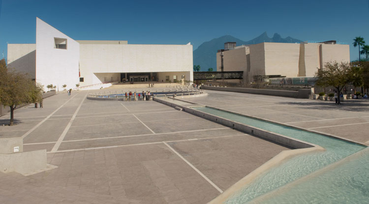

Las películas cinematográficas nos dan una sensación de vida real, y a cualquier espectador le parece lógico que esto suceda. Los movimientos son suaves, no tienen brusquedad, y el público se sentiría defraudado si las imágenes oscilaran o los movimientos se realizaran a saltos. Esto se admitía como cosa normal en los tiempos heroicos de la industria cinematográfica, pero en la actualidad no hay causa para ello. En una película moderna, la sensación de movimiento tiene que ser continúa; una persona paseando por una habitación debe aparecer como si realmente estuviera caminando y no como un grotesco muñeco. Pero todo esto es una ilusión óptica, y no existe tal cosa en una cinta cinematográfica real. Si el obturador de la máquina se abre, y se mantiene así durante mucho tiempo, percibimos, por ejemplo, una sola imagen de un hombre conduciendo un coche, que aparece como una mancha esfumada, mostrándonos como se ha desplazado la figura del coche en la película. No aparece como una imagen en movimiento. Si queremos que el coche se vea nítida y claramente, debe tomarse una foto con el obturador abierto durante un tiempo mínimo. A esta foto le siguen otras en rápida sucesión. Cada foto del coche está representada por una dispositiva y, cuando estas diapositivas se proyectan en una pantalla rápidamente, una detrás de otra, se consigue el efecto de una película cinematográfica. Si las diapositivas son observadas con suficiente rapidez, parece que el coche se mueve sobre la pantalla. Normalmente nuestras salas de proyección están en penumbra, y las transparencias aisladas se proyectan en rápida sucesión, para que aparezcan como una imagen continua. El ojo no puede fundir en todo menos de doce imágenes por segundo. A doce imágenes por segundo, la serie de transparencias aparece como una imagen continua, pero es confusa e irrita los ojos. En los primeros tiempos del cine, se pasaban las películas a 16 transparencias o cuadros por segundo. Entre imagen e imagen, la luz se corta brevemente mediante un obturador; luego, en realidad, el ojo puede ver 48 imágenes por segundo, y no tiene dificultades para complementar los intervalos, puesto que las funde en un conjunto único.
Contamos con espacio ampleo para grabacion.
Tenemos los mejores equipos para hacer el mejor trabajo